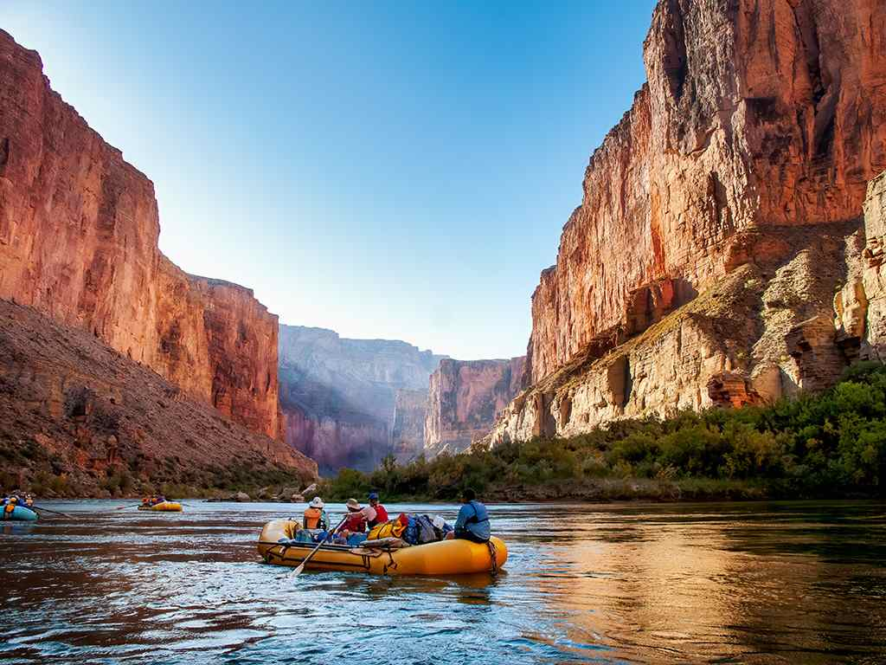

Adventure Awaits!



Spend an afternoon floating through the beautiful, peaceful Yakima Canyon in Washington.
Take a coveted week-long trip through the Grand Canyon. Pack your clothes and we will provide the rest.
If you're up for a thrilling adventure, brave the rapids of the Snake River in Wyoming.
Take a trip with us!
| Day Trips | ||||
| Yakima River | Washington | 3-4 hours | All ages | Beginner |
| Snake River Rapids | Cody, WY | 3-4 hours | 12+ | Advanced |
| Snake River Without Rapids | Cody, WY | 3-4 hours | 7+ | Beginner |
| Multi-Day Trips | ||||
| Cataract Canyon | Canyonlands National Park to Lake Powell | 3 days | Ages 10+ | Advanced |
| Desolation Canyon | Moab, UT | 5 days | Ages 7+ | Intermediate |
Contact Us
If you are ready to begin your adventure, reach out and we will help you find the perfect destination.
Contact Us